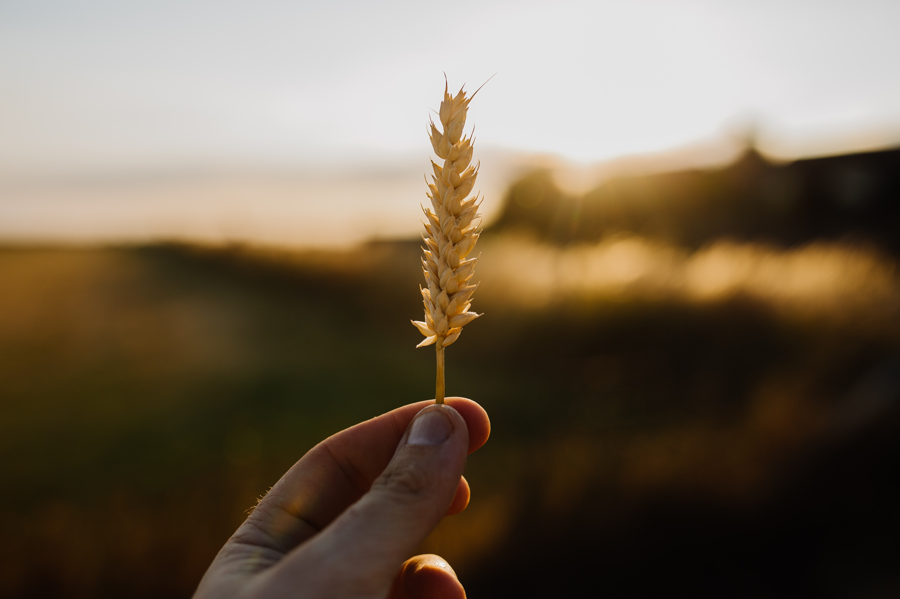
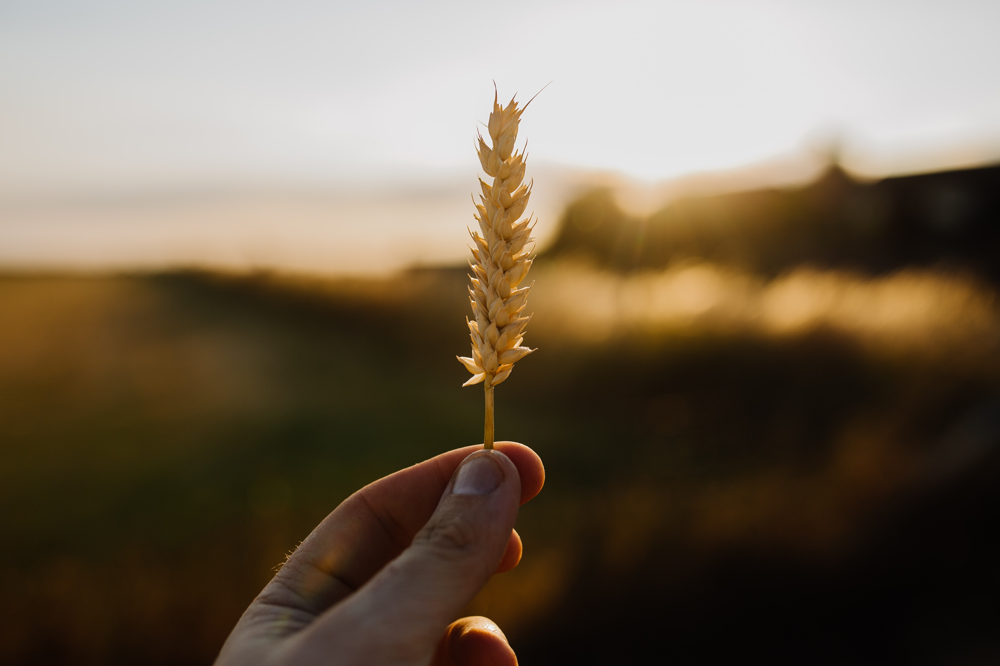

Anti-Chafing products help prevent chafing on your rear and any other body parts that rub together or against clothing, so it is often used by runners and other athletes.

Anti-Chafe Beer allows the body to experience the same sensation it would if you applied anti-chafe cream before any physical activity. Because the same result is achieved by drinking the beer, it’s the first of its kind.
 

First brewed in 1445, Bluesteel’s anti-chafe beer is made with wheat, coriander and yeast with a hint of tea tree oil for it’s anti-chafe qualities.